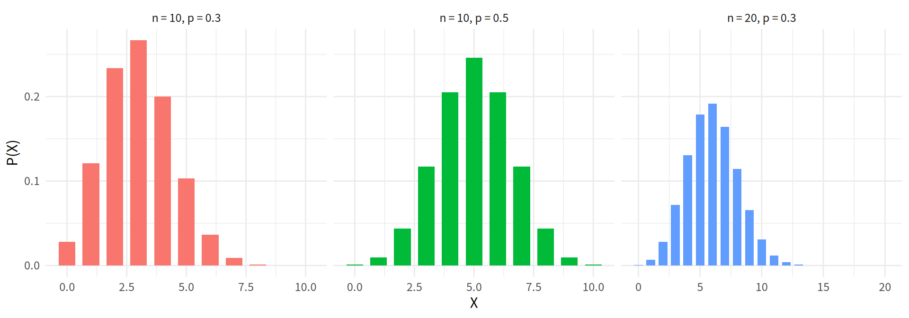

X P
1 1 0.125
2 2 0.125
3 3 0.125
4 4 0.125
5 5 0.125
6 6 0.125
7 7 0.125
8 8 0.125統計學
第5章：離散機率分配
劉昱佑
實踐大學
2026-10-08
本章概覽
第5章說明離散隨機變數的機率分配——如何建構分配、如何以平均數、變異數與期望值描述分配，以及實務上最常使用的幾種特殊分配。
| 節次 | 主題 |
|---|---|
| 5-1 | 隨機變數；離散機率分配；分配圖形；機率分配的兩項要求 |
| 5-2 | 離散隨機變數的平均數、變異數、標準差與期望值 |
| 5-3 | 二項實驗；二項機率公式（階乘型與組合型）；二項分配的平均數、變異數與標準差 |
| 5-4 | 其他類型的分配：多項、卜瓦松、超幾何與幾何分配 |
本章學習目標
讀完本章後，你應該能夠
- 為隨機變數建構機率分配。
- 求離散隨機變數的平均數、變異數、標準差與期望值。
- 求二項實驗在 n 次試驗中恰有 X 次成功的精確機率。
- 求二項分配變數的平均數、變異數與標準差。
- 利用卜瓦松、超幾何、幾何與多項分配求各種變數結果的機率。
第5-1節：機率分配
隨機變數
第1章將變數定義為「可以取不同數值的特徵或屬性」。由於本章的變數都與機率有關，因此稱為隨機變數。
隨機變數
隨機變數是取值由機遇決定的變數。
離散與連續隨機變數
- 離散變數的可能值個數有限，或雖為無限但可以計數——即能用 1, 2, 3, \ldots 一一列舉。
- 連續變數可以取任意兩個給定數值之間區間內的所有值；它來自量測而非計數的資料。
本章只使用離散隨機變數；第6章再說明連續隨機變數。
建構機率分配
投擲三枚硬幣，樣本空間為 TTT、TTH、THT、HTT、HHT、HTH、THH、HHH；若 X 為正面的個數，則 X 可取 0、1、2、3。
| 正面個數 X | 0 | 1 | 2 | 3 |
|---|---|---|---|---|
| 機率 P(X) | \frac{1}{8} | \frac{3}{8} | \frac{3}{8} | \frac{1}{8} |
離散機率分配
離散機率分配由隨機變數可以取到的各個值，以及這些值所對應的機率組成。機率可由理論推導或由觀察取得。
程序表
建構機率分配的步驟
步驟 1 為變數的各個結果製作次數分配。
步驟 2 以各結果的次數除以總次數，求出每個結果的機率。
步驟 3 若需要繪圖，將結果放在 x 軸、機率放在 y 軸，為每個結果及其對應機率畫出垂直長條。
離散機率分配可以用圖形、表格或公式呈現。
範例 5-1
擲八面骰
某桌遊使用一顆八面骰，八個面上分別標有 1 到 8。請為擲一次該骰子所得到的點數建構機率分配。
範例 5-1
解題
整理資料
樣本空間為 1, 2, 3, 4, 5, 6, 7, 8，每個結果的機率都是 \frac{1}{8} = 0.125，因此分配如下。
範例 5-2
投擲四枚硬幣
請以圖形表示投擲四枚硬幣時，出現正面個數的機率分配。
Number of heads X 0 1 2 3 4
Probability P(X) 1/16 4/16 6/16 4/16 1/16回到範例 5-7
範例 5-2
範例 5-2
範例 5-3
外送員的遲到件數
高雄某外送平台在一個晚班時段追蹤旗下 50 位機車外送員，記錄每人有幾筆訂單是遲到送達的。請為每位外送員的遲到件數建構機率分配（模擬資料）。
Late deliveries 1 2 3 4
Frequency 10 20 15 5回到範例 5-8
範例 5-3
範例 5-3
機率分配的兩項要求
機率分配的兩項要求
- 樣本空間中所有事件的機率總和必須等於 1，即 \Sigma P(X) = 1。
- 樣本空間中每個事件的機率必須介於 0 與 1 之間（含 0 與 1），即 0 \leq P(X) \leq 1。
因為樣本空間已包含機率實驗的所有可能結果，機率總和不可能小於 1 或大於 1。單一機率也不可能是負數或大於 1。
範例 5-4
判斷是否為機率分配
判斷下列各分配是否為機率分配。
a. X 2 4 6 8
P(X) 0.3 0.3 0.2 0.4
b. X -$10 $0 $10 $20
P(X) 1/8 1/2 1/4 1/8
c. X 0 1 2 3 4
P(X) 0.2 0.2 0.2 0.2 0.2
d. X 10 20 30 40
P(X) 0.5 0.7 -0.3 0.1範例 5-4
範例 5-4
第5-2節：平均數、變異數、標準差與期望值
機率分配的平均數
樣本平均數 \bar{X} = \frac{\Sigma X}{n} 與母體平均數 \mu = \frac{\Sigma X}{N} 無法用於機率分配的隨機變數，因為骰子必須擲無限多次。以下的新公式可給出精確的理論值。
機率分配平均數的公式
具離散機率分配之隨機變數的平均數為
\mu = X_1 \cdot P(X_1) + X_2 \cdot P(X_2) + \cdots + X_n \cdot P(X_n) = \Sigma X \cdot P(X)
其中 X_1, X_2, \ldots, X_n 為各個結果，P(X_1), P(X_2), \ldots, P(X_n) 為對應的機率。
四捨五入原則
平均數、變異數與標準差的四捨五入原則
機率分配的平均數、變異數與標準差，應比結果 X 多保留一位小數。若使用分數，則應化為最簡分數。
範例 5-5
擲四面骰
擲一顆四個面分別標有 1 到 4 的四面骰，求所得點數的平均數。
回到範例 5-9
範例 5-5
範例 5-6
條碼掃描器
某物流中心一條老舊分揀線上裝有 3 台各自獨立的條碼掃描器，每台在一年後仍能正常運作（W）而非故障（B）的機率為 50%。求該分揀線上正常運作之掃描器台數的平均數。
BBB WBB
BBW WBW
BWB WWB
BWW WWW範例 5-6
範例 5-7
投擲四枚硬幣
投擲四枚硬幣，求出現正面個數的平均數。（分配見範例 5-2。）
範例 5-7
範例 5-8
外送員的遲到件數
利用範例 5-3所建構的分配，求該晚班時段每位外送員遲到件數的平均數。
Outcome X 1 2 3 4
Probability P(X) 0.20 0.40 0.30 0.10範例 5-8
變異數與標準差
平均數描述長期的平均水準，卻完全沒有說明分配的離散程度。定義公式為 \sigma^2 = \Sigma[(X - \mu)^2 \cdot P(X)]；以下代數上等價的簡捷公式則是範例中實際使用的形式。
機率分配變異數的公式
\sigma^2 = \Sigma[X^2 \cdot P(X)] - \mu^2
機率分配的標準差為
\sigma = \sqrt{\sigma^2} \qquad\text{或}\qquad \sigma = \sqrt{\Sigma[X^2 \cdot P(X)] - \mu^2}
請記得，變異數與標準差不可能為負值。
範例 5-9
擲四面骰
計算範例 5-5中機率分配的變異數與標準差。
範例 5-9
範例 5-10
抽取號碼籌碼
袋中有 8 枚籌碼：3 枚標示 2，2 枚標示 4，3 枚標示 6。將籌碼混合後隨機抽出一枚，記下號碼後放回。若此實驗重複很多次，求籌碼號碼的變異數與標準差。
範例 5-10
範例 5-11
轉接主管的客訴電話
台中某客服中心在隨機選出的某一天，記錄旗下 40 位客服人員各自將幾通電話轉接給主管。12 人沒有轉接、14 人轉接 1 通、8 人轉接 2 通、4 人轉接 3 通、2 人轉接 4 通。求每位客服人員轉接通數的變異數與標準差（模擬資料）。
範例 5-11
範例 5-11
期望值
期望值
機率分配中離散隨機變數的期望值，就是該變數的理論平均數，公式為
\mu = E(X) = \Sigma X \cdot P(X)
期望值以符號 E(X) 表示。
期望值的公式與理論平均數的公式相同，因此 E(X) = \mu。當期望值問題牽涉金額時，答案四捨五入到最小的貨幣單位。
範例 5-12
摸彩券
某學生會以每張 NT$100 的價格賣出 500 張摸彩券，獎品是一台價值 NT$12,000 的平板電腦。若你買一張券，收益的期望值是多少？
Win Lose
Gain X NT$11,900 -NT$100
Probability P(X) 1/500 499/500範例 5-12
範例 5-13
獎品抵用券
某夜市遊戲攤位的抽獎箱中放有 20 張抵用券：10 張面額 NT$50、5 張 NT$100、3 張 NT$200、1 張 NT$500、1 張 NT$1,000。若隨機抽出一張，求該抵用券面額的期望值。
範例 5-13
範例 5-14
選擇債券
某投資顧問建議客戶把 NT$400,000 投入兩檔公司債之一。債券 A 的報酬率為 5%，違約率為 1%；債券 B 的報酬率為 8%，違約率為 4%。求兩者的期望報酬，並判斷哪一檔是比較好的投資。債券違約時，投資人將損失全部本金（模擬資料）。
範例 5-14
期望值與機遇遊戲
注意
在賭博遊戲中，若遊戲的期望值為零，稱該遊戲是公平的。若期望值為正，則對玩家有利；若為負，則對莊家有利——長期而言玩家會輸錢。
第5-3節：二項分配
二項實驗
許多機率問題只有兩種結果，或可化簡為兩種結果：硬幣出現正面或反面、球隊贏或輸、療法有效或無效、答案對或錯。實驗的每一次重複稱為一次試驗。
二項實驗
二項實驗是滿足下列四項要求的機率實驗：
- 必須有固定的試驗次數。
- 每次試驗只能有兩種結果，或可化簡為兩種結果。這兩種結果可視為成功與失敗。
- 各次試驗的結果必須彼此獨立。
- 每次試驗成功的機率必須維持不變。
「成功」一詞並不表示發生了什麼好事或正面的事。
範例 5-15
判斷是否為二項實驗
判斷下列各實驗是否為二項實驗。若否，請說明理由。
a. 選出 30 位 ETP 學生，記錄他們就讀的年級
b. 在百貨公司選出 30 位購物者，記錄每人是否以行動支付付款
c. 從一副牌中不放回抽出四張，記錄每張是否為人頭牌
d. 從一家大型貿易公司選出八位員工，詢問每人是否持有多益證書
e. 記錄 60 筆隨機選出之網路訂單各自的商品件數範例 5-15
解題
逐一檢查四項要求
- a. 否。結果有四種：大一、大二、大三、大四。
- b. 是。四項要求都滿足。
- c. 否。抽出的牌不放回，因此各次事件並不獨立。
- d. 是。四項要求都滿足。
- e. 否。一筆訂單可以包含任意件數的商品，結果不只兩種。
二項分配
二項分配
二項實驗的各個結果及其對應機率所構成的分配，稱為二項分配。
二項分配的符號
| 符號 | 意義 |
|---|---|
| P(S) | 成功機率的符號 |
| P(F) | 失敗機率的符號 |
| p | 成功的數值機率 |
| q | 失敗的數值機率 |
| n | 試驗次數 |
| X | n 次試驗中成功的次數 |
P(S) = p 且 P(F) = 1 - p = q。注意 0 \leq X \leq n，且 X = 0, 1, 2, 3, \ldots, n。
二項機率公式
二項機率公式
在二項實驗中，n 次試驗恰有 X 次成功的機率為
P(X) = \frac{n!}{(n - X)!\,X!} \cdot p^X \cdot q^{n-X} \qquad\text{或}\qquad P(X) = {}_{n}C_{X} \cdot p^X \cdot q^{n-X}
這兩種寫法是同一個公式：在 n 次試驗中取得 X 次成功而不計順序的方法數，就是組合數
_{n}C_{X} = \frac{n!}{(n-X)!\,X!}
每次成功的機率為 p 且出現 X 次，每次失敗的機率為 q 且出現 n - X 次。
範例 5-16
投擲四枚硬幣
投擲一枚硬幣 4 次，求恰好出現三個正面的機率。
HHHH HHHT HHTH HTHH THHH HHTT HTHT HTTH
THHT THTH TTHH HTTT THTT TTHT TTTH TTTT回到範例 5-19
範例 5-16
範例 5-16
解題
以二項公式求解——此處 n = 4、X = 3、p = \frac{1}{2}、q = \frac{1}{2}。
P(3\text{ heads}) = {}_{4}C_{3} \left(\tfrac{1}{2}\right)^3 \left(\tfrac{1}{2}\right)^1 = \frac{4!}{(4-3)!\,3!} \left(\tfrac{1}{2}\right)^3 \left(\tfrac{1}{2}\right)^1 = 0.25
不放回抽樣
注意
當抽樣不放回時（例如問卷調查），各事件是相依的。不過，若樣本數不超過母體的 5%，即 n \leq 0.05N，仍可視為獨立。
範例 5-17
行動支付付款
某台灣線上購物平台的支付研究發現，每 10 筆訂單中有 3 筆是以行動支付付款。若隨機選出 12 筆訂單，求其中恰有 3 筆以行動支付付款的機率（模擬資料）。
範例 5-17
範例 5-17
範例 5-18
委託承攬運送業者
一項貿易研究發現，台灣中小型出口商中有 40% 是把貨物交給承攬運送業者，而不是自行訂艙。若隨機選出 6 家出口商，求其中至少有 4 家委託承攬運送業者的機率（模擬資料）。
範例 5-18
解題
以階乘型求解——先求 P(4)、P(5) 與 P(6)，再相加。
P(4) = \frac{6!}{(6-4)!\,4!}(0.4)^4(0.6)^2 \approx 0.138 \qquad P(5) = \frac{6!}{(6-5)!\,5!}(0.4)^5(0.6)^1 \approx 0.037
P(6) = \frac{6!}{(6-6)!\,6!}(0.4)^6(0.6)^0 \approx 0.004
範例 5-18
使用二項機率表
以二項公式逐項計算相當繁瑣，因此附錄 A 的 Table A-2 針對常用的 n 與 p 列出個別事件的機率。在 R 中同樣的值可由 dbinom(X, n, p) 取得，累積機率則由 pbinom(X, n, p) 取得。
範例 5-19
投擲四枚硬幣
利用 Table A-2 解範例 5-16的問題。
範例 5-19
範例 5-20
保固退回手機的維修
新竹某維修中心發現，保固期內退回的手機有 10% 需要更換主機板。若隨機選出 15 支退回的手機，請利用附錄 A 的二項機率表求下列機率（模擬資料）。
a. 樣本中恰有 4 支需要更換主機板。
b. 樣本中至多有 3 支需要更換主機板。
c. 樣本中至少有 3 支需要更換主機板。範例 5-20
範例 5-21
如期入住的訂房
台北某精品旅館發現，已確認的訂房中有 80% 會如期入住，其餘為訂房未到。若隨機選出 25 筆已確認的訂房，求其中如期入住的筆數介於 18 到 22（含）之間的機率（模擬資料）。
範例 5-21
以 R 繪製二項分配
改變 n 與 p 會同時改變二項分配的中心位置與形狀。整理資料
以 R 繪製二項分配
輸出圖形

二項分配的平均數、變異數與標準差
二項分配的平均數、變異數與標準差
\mu = n \cdot p \qquad \sigma^2 = n \cdot p \cdot q \qquad \sigma = \sqrt{n \cdot p \cdot q}
這些較簡短的公式，與第5-2節的一般公式 \mu = \Sigma X \cdot P(X) 及 \sigma^2 = \Sigma[X^2 \cdot P(X)] - \mu^2 在數學上完全等價。
範例 5-22
投擲硬幣
投擲一枚硬幣 16 次，求出現正面次數的平均數、變異數與標準差。
範例 5-22
範例 5-22
範例 5-23
擲骰子
擲一顆十面骰（十個面分別標有 1 到 10）500 次，求出現 7 點次數的平均數、變異數與標準差。
範例 5-23
範例 5-24
跨境網購
一項消費研究指出，台灣線上購物者中有 75% 曾在跨境電商網站下過至少一筆訂單。若隨機選出 1,200 位購物者，求其中有跨境網購經驗者人數的平均數、變異數與標準差（模擬資料）。
範例 5-24
第5-4節：其他類型的分配
另外四種離散分配
除了二項分配之外，最常使用的四種分配是多項分配、卜瓦松分配、超幾何分配與幾何分配。
| 分配 | 使用時機 |
|---|---|
| 多項 | 每次試驗有兩種以上的結果 |
| 卜瓦松 | n 大、p 小；事件發生於時間、面積或體積之上 |
| 超幾何 | 兩種結果，且抽樣不放回 |
| 幾何 | 兩種結果，重複試驗直到第一次成功 |
多項分配
若實驗中每次試驗的結果超過兩種——例如「贊成」、「反對」、「無意見」——就不能使用二項分配。
多項實驗
多項實驗是滿足下列四項要求的機率實驗：
- 必須有固定的試驗次數。
- 每次試驗有特定數目的結果，但各次不必相同。
- 各次試驗彼此獨立。
- 特定結果發生的機率維持不變。
多項分配的公式
多項分配的公式
若 X 由事件 E_1, E_2, \ldots, E_k 構成，對應機率為 p_1, p_2, \ldots, p_k，且 X_i 為 E_i 發生的次數，則
P(X) = \frac{n!}{X_1! \cdot X_2! \cdot X_3! \cdots X_k!} \cdot p_1^{X_1} \cdot p_2^{X_2} \cdots p_k^{X_k}
其中 X_1 + X_2 + \cdots + X_k = n 且 p_1 + p_2 + \cdots + p_k = 1。
多項分配是一種一般化的分配，二項分配則是其 k = 2 的特例。
範例 5-25
電商平台的每月訂單數
某電商平台發現，一位活躍顧客在一個月內下 1、2、3、4 筆訂單的機率分別為 0.45、0.30、0.20、0.05。若選出 10 位活躍顧客，求其中 4 位下 1 筆、3 位下 2 筆、2 位下 3 筆、1 位下 4 筆訂單的機率（模擬資料）。
範例 5-25
解題
求解——n = 10；X_1 = 4、X_2 = 3、X_3 = 2、X_4 = 1；p_1 = 0.45、p_2 = 0.30、p_3 = 0.20、p_4 = 0.05。
P(X) = \frac{10!}{4!\,3!\,2!\,1!}(0.45)^4(0.30)^3(0.20)^2(0.05)^1 \approx 0.0279
[1] 12600[1] 0.02790065[1] 0.02790065這 10 位顧客恰好如上分布的機率約為 0.0279。
範例 5-26
手搖飲的購買杯數
某手搖飲連鎖店發現，進店顧客購買 0、1、2、3 杯飲料的機率分別為 0.20、0.50、0.20、0.10。若有 9 位顧客進店，求其中 2 位沒買、4 位買 1 杯、2 位買 2 杯、1 位買 3 杯的機率（模擬資料）。
範例 5-26
解題
求解——n = 9；X_1 = 2、X_2 = 4、X_3 = 2、X_4 = 1；p_1 = 0.20、p_2 = 0.50、p_3 = 0.20、p_4 = 0.10。
P(X) = \frac{9!}{2!\,4!\,2!\,1!}(0.20)^2(0.50)^4(0.20)^2(0.10)^1 = 0.0378
[1] 3780[1] 0.0378出現題目所述結果的機率為 0.0378。
範例 5-27
抽取彩色彈珠
盒中有 5 顆紅色彈珠、3 顆白色彈珠與 2 顆黑色彈珠。每次隨機抽出一顆，記下顏色後放回。求抽出 6 顆時，其中 3 顆紅色、2 顆白色、1 顆黑色的機率。
範例 5-27
解題
求解——n = 6；X_1 = 3、X_2 = 2、X_3 = 1；p_1 = \frac{5}{10}、p_2 = \frac{3}{10}、p_3 = \frac{2}{10}。
P(X) = \frac{6!}{3!\,2!\,1!}\left(\tfrac{5}{10}\right)^3\left(\tfrac{3}{10}\right)^2\left(\tfrac{2}{10}\right)^1 = 60(0.00225) = 0.135
卜瓦松分配
卜瓦松實驗
卜瓦松實驗是滿足下列要求的機率實驗：
- 隨機變數 X 為某一區間（長度、面積、體積、時間等）內事件發生的次數。
- 事件隨機發生。
- 各次發生彼此獨立。
- 每單位區間平均發生次數為已知。
當 n 大而 p 小，且事件發生於一段時間之內，或某種密度分布於給定的面積或體積之上時，卜瓦松分配特別有用。
卜瓦松分配的公式
卜瓦松分配的公式
若 \lambda 為每單位平均發生次數，則在某一段時間、體積、面積等區間內恰發生 X 次的機率為
P(X;\, \lambda) = \frac{e^{-\lambda}\lambda^X}{X!} \qquad\text{其中 } X = 0, 1, 2, \ldots
其中 e 為常數，約等於 2.7183。答案四捨五入到小數點後四位。
附錄 A 的 Table A-3 列出各種 \lambda 與 X 之下的 P 值；在 R 中同樣的值可由 dpois(X, lambda) 取得。
範例 5-28
布疋的瑕疵點
彰化某紡織廠發現，一卷 400 公尺長的布上隨機分布著 120 個瑕疵點。求任取 1 公尺的布恰有 2 個瑕疵點的機率（模擬資料）。
範例 5-28
範例 5-29
緊急補貨需求
高雄某物流倉庫平均每小時收到 2 件緊急補貨需求。就任一小時而言，求下列各機率（模擬資料）。
a. 至多 3 件 b. 至少 3 件 c. 5 件以上範例 5-29
解題
求解——\lambda = 2，「至多 3 件」指 0、1、2 或 3 件；其餘兩小題以餘事件計算較為方便。
[1] 0.13533528 0.27067057 0.27067057 0.18044704 0.09022352[1] 0.8571235[1] 0.5939942[1] 0.05265302P(X \leq 3) = 0.8571、P(X \geq 3) = 0.5940、P(X \geq 5) = 0.0527；第 a 小題的事件最可能發生，第 c 小題的事件最不可能發生。
以卜瓦松分配近似二項分配
卜瓦松近似二項分配的時機
當期望值 \lambda = n \cdot p 小於 5 時，也可以用卜瓦松分配近似二項分配（n \cdot q < 5 時亦然）。
範例 5-30
貨櫃查驗
海關對抵達台中港的貨櫃約抽驗 1.5% 進行實體查驗。若某艘船卸下 300 只貨櫃，求其中恰有 6 只被查驗的機率（模擬資料）。
範例 5-30
超幾何分配
抽樣不放回時，各次試驗並不獨立，二項分配無法給出精確機率。假設要從 7 位女性與 5 位男性中選出 4 人組成委員會：選出 3 女 1 男的方法數為 {}_{7}C_{3} \cdot {}_{5}C_{1} = 35 \cdot 5 = 175，而 {}_{12}C_{4} = 495，因此 P(X) = \frac{175}{495} = \frac{35}{99}。
超幾何實驗
超幾何實驗是滿足下列要求的機率實驗：
- 試驗次數固定。
- 每次試驗有兩種結果，可分為成功與失敗。
- 抽樣時不放回。
超幾何分配的公式
超幾何分配的公式
若母體中只有兩類物件，其中 a 件屬於一類、b 件屬於另一類，且 a + b 為母體總數，則不放回抽出 n 件樣本、其中有 X 件屬 a 類、n - X 件屬 b 類的機率 P(X) 為
P(X) = \frac{{}_{a}C_{X} \cdot {}_{b}C_{n-X}}{{}_{a+b}C_{n}}
範例 5-31
實習申請者
有 12 位學生申請某國際貿易公司的暑期實習，其中 7 位有海外留學經驗、5 位沒有。若主管隨機選出 4 位申請者，求 4 位都有海外留學經驗的機率。
範例 5-31
範例 5-32
未校正的感測器
品管工程師已知某批進貨的 12 個感測器中，有 4 個未完成校正。若隨機選出 5 個進行測試，求其中恰有 2 個未校正的機率。
範例 5-32
範例 5-33
瑕疵行動電源
一批 20 個行動電源在出貨前進行檢驗，隨機測試其中 4 個；只要 4 個之中有 1 個以上是瑕疵品，整批即予退回。若該批中實際上有 5 個瑕疵品，求整批被退回的機率。
範例 5-33
幾何分配
幾何分配用於「只有兩種結果的實驗一直重複直到出現一次成功為止」的情境——例如一直擲硬幣到出現正面，或一直擲骰子到出現 6 點。幾何機率分配告訴我們成功大約會在第幾次發生。
幾何實驗
滿足下列要求的機率實驗即為幾何實驗：
- 每次試驗有兩種結果，可分為成功與失敗。
- 各次結果彼此獨立。
- 每次試驗成功的機率相同。
- 實驗持續進行直到出現一次成功為止。
幾何分配的公式
幾何分配的公式
若每次試驗成功的機率為 p，n 為第一次成功所在的試驗序號，則第一次成功發生在第 n 次試驗的機率為
P(n) = p(1 - p)^{n-1} \qquad\text{其中 } n = 1, 2, 3, \ldots
範例 5-34
擲骰子
反覆擲一顆骰子，求第一次出現 1 點是在第三次擲出的機率。
範例 5-34
解題
求解——要讓第一次的 1 點出現在第三擲，前兩擲必須都不是 1 點：
P(\text{not }1,\ \text{not }1,\ 1) = \tfrac{5}{6} \cdot \tfrac{5}{6} \cdot \tfrac{1}{6} = \frac{25}{216} \approx 0.116
P(n) = p(1-p)^{n-1} = \tfrac{1}{6}\left(1 - \tfrac{1}{6}\right)^{3-1} = \tfrac{1}{6}\left(\tfrac{5}{6}\right)^2 = \frac{25}{216}
範例 5-35
透過線上旅行社訂購行程
台灣出國旅客中約有 35% 是透過線上旅行社訂購行程。若逐一聯繫旅客，求第五位被聯繫到的旅客是第一位透過線上旅行社訂購行程者的機率（模擬資料）。
範例 5-35
表 5-1：離散分配總覽
| Distribution | Used when |
|---|---|
| Binomial | Two outcomes, fixed number of independent trials, constant p |
| Multinomial | More than two outcomes, constant probabilities, independent, fixed n |
| Poisson | n large and p small; occurrences over time, area or volume |
| Hypergeometric | Two outcomes and sampling is done without replacement |
| Geometric | Two outcomes; the first success occurs on the nth trial |
表 5-1：離散分配總覽（續）
機率公式——二項與多項：
P(X) = {}_{n}C_{X}\,p^X q^{n-X} \qquad P(X) = \frac{n!}{X_1!\cdots X_k!}p_1^{X_1}\cdots p_k^{X_k}
卜瓦松與超幾何：
P(X;\lambda) = \frac{e^{-\lambda}\lambda^X}{X!} \qquad P(X) = \frac{{}_{a}C_{X} \cdot {}_{b}C_{n-X}}{{}_{a+b}C_{n}}
幾何：
P(n) = p(1-p)^{n-1}
重要名詞
第5章詞彙
二項分配 · 二項實驗 · 離散機率分配 · 期望值 · 幾何分配 · 幾何實驗 · 超幾何分配 · 超幾何實驗 · 多項分配 · 多項實驗 · 卜瓦松分配 · 卜瓦松實驗 · 隨機變數
重要公式
機率分配
機率分配的平均數：\mu = \Sigma X \cdot P(X)
機率分配的變異數與標準差： \sigma^2 = \Sigma[X^2 \cdot P(X)] - \mu^2 \qquad \sigma = \sqrt{\Sigma[X^2 \cdot P(X)] - \mu^2}
期望值：E(X) = \Sigma X \cdot P(X)
重要公式
二項分配
P(X) = \frac{n!}{(n-X)!\,X!} \cdot p^X \cdot q^{n-X} \qquad\text{或}\qquad P(X) = {}_{n}C_{X} \cdot p^X \cdot q^{n-X}
\mu = n \cdot p \qquad \sigma^2 = n \cdot p \cdot q \qquad \sigma = \sqrt{n \cdot p \cdot q}
重要公式
其他分配
P(X) = \frac{n!}{X_1! \cdot X_2! \cdots X_k!} \cdot p_1^{X_1} \cdot p_2^{X_2} \cdots p_k^{X_k} \qquad P(X;\, \lambda) = \frac{e^{-\lambda}\lambda^X}{X!}
P(X) = \frac{{}_{a}C_{X} \cdot {}_{b}C_{n-X}}{{}_{a+b}C_{n}} \qquad P(n) = p(1-p)^{n-1}
重點整理
重點
- 離散機率分配由隨機變數可取的各個值與其對應機率組成，並且必須滿足 \Sigma P(X) = 1 與 0 \leq P(X) \leq 1
- 機率分配的平均數、變異數與標準差：\mu = \Sigma X \cdot P(X)、\sigma^2 = \Sigma[X^2 \cdot P(X)] - \mu^2、\sigma = \sqrt{\sigma^2}
- 期望值 E(X) = \mu 就是理論平均數；當 E(X) = 0 時遊戲是公平的
- 二項實驗具有固定的試驗次數、兩種結果、各次獨立，且 p 保持不變
- 二項機率可用階乘型 \frac{n!}{(n-X)!X!}p^Xq^{n-X} 或組合公式 {}_{n}C_{X}\,p^Xq^{n-X} 計算——兩者完全相同
- 對二項變數而言，\mu = np、\sigma^2 = npq、\sigma = \sqrt{npq}
- 多項分配把二項分配推廣到每次試驗有兩種以上結果的情形
- 卜瓦松分配計數某區間內事件發生的次數，並在 \lambda = np < 5 時可近似二項分配
- 超幾何分配適用於不放回抽樣
- 幾何分配給出第一次成功發生在第 n 次試驗的機率：P(n) = p(1-p)^{n-1}
Acknowledgement
Copyright notice. These teaching materials follow the organization and terminology of Bluman, A. G. (2023). Elementary statistics: A step by step approach (11th ed.). McGraw Hill. All rights in the original work are reserved by its authors and publishers.
Original examples. Every worked example, data set, and R script in these slides was written for this course. The data are hypothetical unless stated otherwise.
Non-commercial use only. These materials are strictly intended for educational purposes and must not be used for commercial gain or profit.
Proper attribution. Any reproduction, distribution, or use of these materials must provide proper attribution to the original source.

Elementary Statistics: A Step by Step Approach